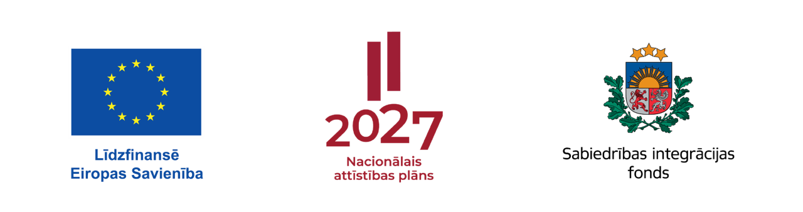

Publicēti projekta “Atlabšanas ceļvedis” izpētes un praktiskie materiāli
Projekta “Atlabšanas ceļvedis” lapā izveidota publikāciju sadaļa. Tajā pieejama starptautiskās labās prakses izpēte par atbalstu pēc atkarību ārstēšanas un rehabilitācijas un zinātniskās literatūras pārskats par līdzinieku atbalstu atlabšanas procesā.
Līdz ar pārskatiem publicēti trīs praktiski pielikumi: līdzinieka rokasgrāmata, prasības līdziniekam un atlases kārtība, kā arī līdzinieku mācību programma. Materiāli palīdz pamatot pakalpojuma saturu, noteikt līdzinieka uzdevumus un sagatavoties darbam pirms pakalpojuma izmēģināšanas. Tie nav pakalpojuma aprobācijas rezultātu izvērtējums.
Abas publikācijas un trīs pielikumus var lejupielādēt Word formātā.
Projektu administrē Sabiedrības integrācijas fonds. Projektu līdzfinansē Eiropas Savienība — Eiropas Sociālais fonds Plus (85 %) un Latvijas valsts budžets (15 %).
Projekta Nr. 4.4.1.1./4/013 · Līguma Nr. 4.4.1.1./4/013/L3

IPC “Osta” uzsāk projektu “Atlabšanas ceļvedis”
Ar prieku paziņojam, ka biedrība “Inovāciju prakses centrs “Osta”” (IPC “Osta”) īstenos projektu “Atlabšanas ceļvedis”. Projekta mērķis ir izstrādāt un izmēģināt jaunu sabiedrībā balstītu atlabšanas atbalsta pakalpojumu pilngadīgiem cilvēkiem, kuri atrodas stabilā atlabšanas procesā pēc atkarību izraisošu vielu vai procesu lietošanas pārtraukšanas.
Pakalpojums apvienos sociālo darbu, psiholoģisko un ģimenes atbalstu, individuālu atlabšanas plānošanu, kopienas grupas, tematiskus seminārus, kopienas pasākumus un līdzinieka-konsultanta atbalstu. Projektā plānots iesaistīt vismaz 20 cilvēkus no visas Latvijas. Projekts norisināsies no 2026. gada 1. septembra līdz 2028. gada 28. februārim.
Projektu administrē Sabiedrības integrācijas fonds. Tas tiek īstenots Eiropas Savienības kohēzijas politikas programmas 2021.–2027. gadam 4.4.1. specifiskā atbalsta mērķa “Veicināt nabadzības vai sociālās atstumtības riskam pakļauto personu sociālo integrāciju, izmantojot sociālās inovācijas” 4.4.1.1. pasākumā “Atbalsts jaunām pieejām sabiedrībā balstītu sociālo pakalpojumu sniegšanā”.
Projekta kopējās attiecināmās izmaksas ir 75 168,84 eiro. Projektu līdzfinansē Eiropas Savienība — Eiropas Sociālais fonds Plus (85 %) un Latvijas valsts budžets (15 %).
Projekta Nr. 4.4.1.1./4/013 · Līguma Nr. 4.4.1.1./4/013/L3
Mūsu jauniešu atbalsta grupa arī 2026. gadā turpina tikties Jelgavas NVO namā.
Kā ierasts, grupa pulcējas katru otro sestdienu, un mēs esam pateicīgi NVO namam par iespēju izmantot šīs telpas.
Ja vēlies pievienoties — droši sazinies ar mums!
Plānota biedru sapulce un stratēģijas pārskatīšana
2025. gada 18. augustā tiks rīkota biedrības “Inovāciju prakses centrs Osta” biedru sapulce. Tās mērķis ir uzņemt jaunus biedrus un izstrādāt stratēģiju nākamajam darbības gadam.
Sapulce būs iespēja izvērtēt līdzšinējo pieredzi un noteikt jaunus mērķus, lai vēl efektīvāk atbalstītu cilvēkus un kopienas, ar kurām strādājam.
Ceram, ka šī tikšanās dos jaunu iedvesmu nākamajam gadam — lai īstenotu visus mūsu iecerētos projektus ar pārliecību un radošu spēku!
Mēs uzsākam izstrādāt piekļūstamu mājaslapu
Biedrība “Inovāciju prakses centrs Osta” ir uzsākusi savas jaunās mājaslapas izstrādi, īpašu uzmanību pievēršot digitālajai piekļūstamībai.
Piekļūstama mājaslapa ir būtiska, lai nodrošinātu vienlīdzīgu informācijas un pakalpojumu pieeju visiem sabiedrības locekļiem — tostarp cilvēkiem ar redzes, dzirdes, kustību vai izziņas traucējumiem.
Šis solis ir aktuāls laikā, kad Latvijā arvien lielāka uzmanība tiek pievērsta digitālās vides piekļūstamībai — gan saskaņā ar Eiropas Savienības Piekļūstamības direktīvu (2019/882), kas no 2025. gada
28. jūnija nosaka jaunus standartus privātā sektora digitālajiem risinājumiem, gan arī Direktīvu 2016/2102, kura attiecas uz publiskā sektora (un noteiktos gadījumos arī NVO) tīmekļvietnēm.
Mēs izvēlamies ievērot piekļūstamības principus, jo uzskatām tos par būtiskiem iekļaujošas sabiedrības attīstībai.
Par mājaslapas izstrādi un piekļūstamības testēšanu atbild Aleksandra Pavlovska.